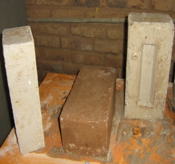

شركة سمبو للتجار والمقاولات المحدودة
مقاولات مواد البناء - الطوب
تقانة الطوب المضغوط المثبت
تقانة الطوب المضغوط المثبت يعتبر السودان أحد البلدان النامية التي تحتاج الي التنمية العمرانية. ويمثل عدم مواكبة البلاد للطفرة التكنولوجية في مجال صناعة مواد البناء عائقا" في سبيل تطور البنيات الاساسية والمباني السكنية ، حيث أن الطوب الاحمر ذو تكلفة انتاجية عالية ولا يمكن صناعته في كل المناطق بالسودان لعدم توفر المواد الخام، كما ان له اضرار بيئية بالغة لاعتماده علي حطب الوقود في الحرق ، هذا عوضا" عن طريقتة التقليدية في الصناعة والتي لا تلتزم بالمواصفات القياسية وتؤثر علي صحة العمال والبيئة المحيطة لرداءة بيئة العمل ، لذا لا تنتج ما يفي حاجة البلاد الفعلية من هذا المنتج. تعتبر تكنولوجيا صناعة الطوب المثبت البديل الامثل لمواد البناء الحالية لاعتمادها علي مواد خام متوفرة في كل البلاد وتكنولوجيا بسيطة يمكن صناعتة محليا مما يؤدي الي الاستغلال الامثل للموارد المحلية والتقليل من الاضرار البيئية ومحاربة الفقر باستحداث مصادر دخل في مراحل الصناعة المختلفة من نقل التراب وانتاج الطوب وانشاء المباني والمدارس والاندية والمستشفيات في بقاع السودان.
الطوب المثبت
يتكون الطوب المثبت من (تراب- اسمنت/جير – ماء)